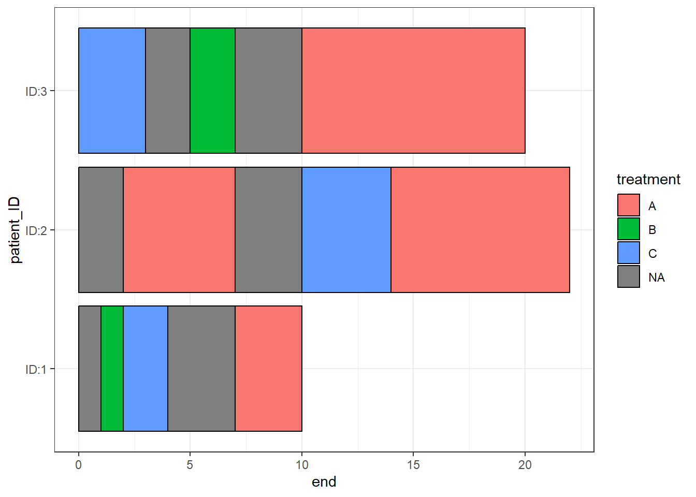
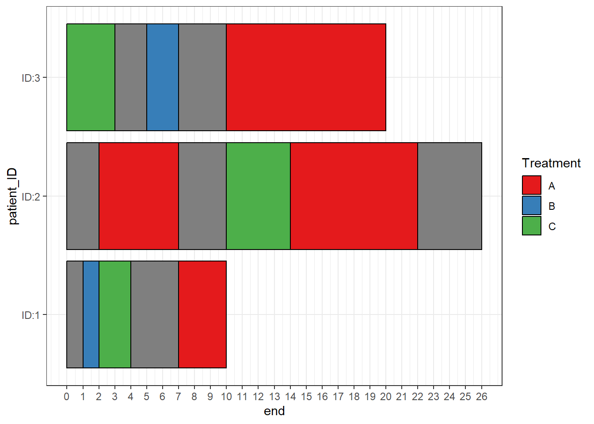

3 More complex data structures
3.1 Gaps between sections in a single bar
There may be situations where you want to include gaps between sections of colours in a single bar, or have bars that do not start at time zero.
Gap_data <- data.frame(patient_ID=c('ID:3','ID:1','ID:1','ID:1','ID:2',
'ID:2','ID:2','ID:3','ID:3'),
start=c(10,1,2,7,2,10,14,5,0),
end=c(20,2,4,10,7,14,22,7,3),
treatment=c("A","B","C","A","A","C","A","B","C"))
knitr::kable(Gap_data)| patient_ID | start | end | treatment |
|---|---|---|---|
| ID:3 | 10 | 20 | A |
| ID:1 | 1 | 2 | B |
| ID:1 | 2 | 4 | C |
| ID:1 | 7 | 10 | A |
| ID:2 | 2 | 7 | A |
| ID:2 | 10 | 14 | C |
| ID:2 | 14 | 22 | A |
| ID:3 | 5 | 7 | B |
| ID:3 | 0 | 3 | C |
When a start and end are specified any spaces in between are filled in with a section of “NA”
swimmer_plot(df=Gap_data,id='patient_ID',name_fill="treatment",col=1,
id_order = c('ID:1','ID:2','ID:3')) +theme_bw()
Additional “NA” information can be added to the end of a bar when the colour variables is NA
Gap_data <- rbind(Gap_data,data.frame(patient_ID='ID:2',start=22,end=26,treatment=NA))
knitr::kable(Gap_data)| patient_ID | start | end | treatment |
|---|---|---|---|
| ID:3 | 10 | 20 | A |
| ID:1 | 1 | 2 | B |
| ID:1 | 2 | 4 | C |
| ID:1 | 7 | 10 | A |
| ID:2 | 2 | 7 | A |
| ID:2 | 10 | 14 | C |
| ID:2 | 14 | 22 | A |
| ID:3 | 5 | 7 | B |
| ID:3 | 0 | 3 | C |
| ID:2 | 22 | 26 | NA |
scale_fill_manual can be used to have the NA sections filled in transparently with the argument na.value=NA
swimmer_plot(df=Gap_data,id='patient_ID',name_fill="treatment",col=1,
id_order = c('ID:1','ID:2','ID:3')) +
ggplot2::theme_bw()+ggplot2::scale_fill_manual(name="Treatment",
values=c("A"="#e41a1c", "B"="#377eb8","C"="#4daf4a",na.value=NA),breaks=c("A","B","C"))+
ggplot2::scale_y_continuous(breaks=c(0:26))